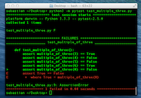
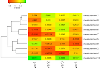
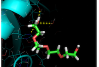
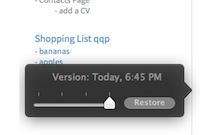
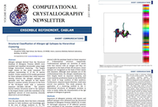
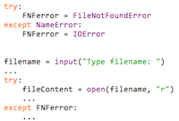
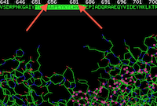

|  |
Unit testing in Python - Why we want to make it a habit
--posted on December 14, 2013 Let's be honest, code testing is everything but a joyful task. However, a good unit testing framework makes
this process as smooth as possible. Eventually, testing becomes a regular and continuous process, accompanied
by the assurance that our code will operate just as exact and seamlessly as a Swiss clockwork. [...] |
|  |
A short tutorial for decent heat maps in R
--posted on December 8, 2013 I received many questions from people who want to quickly visualize their data via heat maps - ideally as quickly as possible. This is the major issue of exploratory data analysis, since we often don't have the time to digest whole books about the particular techniques in different software packages to just get the job done. |
|  |
BondPack - A collection of plugins to visualize molecular bonds in PyMOL
--posted on November 17, 2013 Drawing interactions between atoms can be often quite cumbersome when done manually. For the sake of convenience, I developed three plugins for PyMOL that will make our life as protein biologists a little bit easier. |
|
SQLite - Working with large data sets in Python effectively
--posted on November 3, 2013 My new project confronted me with the task to screen a huge set of large data files in text format with billions of entries each. I will have to retrieve data repeatedly and frequently in future, thus I was tempted to find a better solution than brute-force scanning through ~20 separate 1-column text files with ~6 billion entries every time line by line. |
|
|  |
Getting Things Done With Simplenote
--posted on September 22, 2013 Every now and then I try to learn from my previous experiences and try to refine my task and project management implementation. My whole goal is to have a system that allows me to have both my tasks and my references handy in one place. An important prerequisite for the tool of choice is that it must be plain and simple to use, transferable, and available on all different platforms that I am using: iPad, iPhone, Mac, and my Linux computer at work. |
|  |
Structural Classification of Food Allergen Epitopes
- The PDB To FASTA Converter in Action!
--posted on August 25, 2013 Naveen Chakicherla discovered the shared tertiary structure consensus motif of an important group of allergen epitopes in his research project at Lawrence Berkeley National Laboratory. His results were reported in a research article that was published in the July 2013 issue of the Computational Crystallography Newsletter. |
|  |
Be aware of the streamlined exception hierarchy in Python 3.3.0
--posted on March 3, 2013 It is really nice to see the active development of Python. Thanks to the great community, Python has evolved into the favorite and most popular interpreted programming language. An important date in the history of Python certainly was December 3rd, 2008 - the release of Python 3.0. However, Python 3 did not please everyone, the community was literally divided; as until today, many people are still using Python 2.7x. |
|  |
Misleading FASTA sequences in the Protein Data Bank
--posted on February 23, 2013 The Protein Data Bank (rcsb.org) deposited amino acid sequences in FASTA format for each PDB structure file. However, those FASTA sequences are not necessarily identical to the amino acid sequences in the corresponding PDB files. |